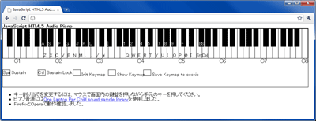

JavaScript HTML5 Audio ピアノ

HTML5 Audioを使ったピアノもどきです。
使っているキーボードやブラウザに合わせてキー割り当てを変更できます。
88鍵分の音源データ
はwavファイルで40MB、mp3またはoggで4MBくらいにもなり、メモリも相当な量必要になります。
Chromeで88鍵バージョンだと鳴らないキーが出てしまうようです。
実行
88鍵バージョン
(Firefox, Operaで動作確認)
20鍵バージョン
(Firefox, Opera, Chromeで動作確認)
参考
ピアノ音源には
One Laptop Per Child sound sample library
を使用しました。
AKIYAMA Kouhei